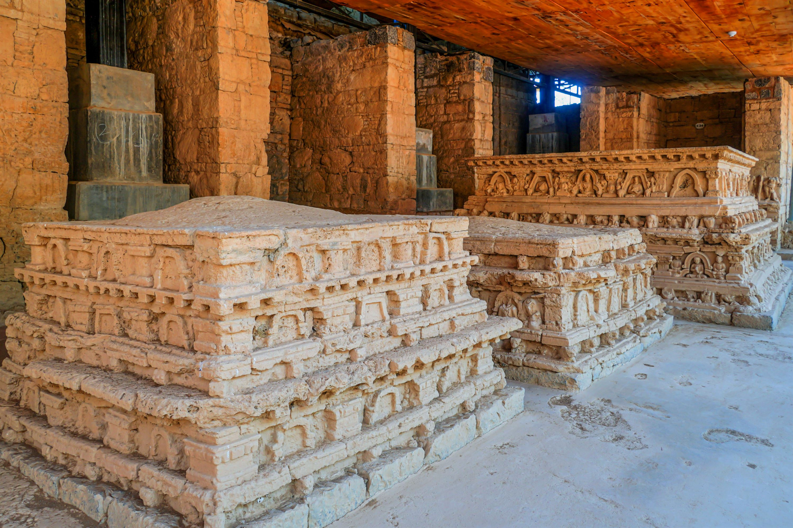

<div class="portfolio-single-load clearfix">
    <div class="custom-full-width-box">
        <div class="custom-container">
            <div class="custom-row align-items-center">
                <div class="custom-image-column">
                    
                </div>
                <div class="custom-text-column">
                    <h2 class="custom-heading">Dharmarajika Stupa and Jaulian Monastery</h2>
                    <p class="custom-paragraph">
                        Visit the Dharmarajika Stupa, one of the oldest stupas in Taxila, believed to have been built by the Mauryan emperor Ashoka in the 3rd century BCE. Admire its imposing structure adorned with intricate carvings and sculptural details, reflecting the architectural prowess of the Mauryan dynasty. Nearby, explore the Jaulian Monastery, founded in the 2nd century BCE and expanded during the Kushan period. This UNESCO World Heritage Site boasts well-preserved ruins and ancient Buddhist art, providing insight into the spiritual and intellectual life of ancient Taxila.

                    </p>
                </div>
            </div>
        </div>
    </div><!-- .custom-full-width-box end -->

</div><!-- end single-project -->
